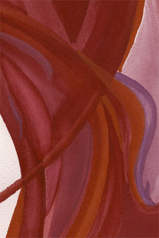

Music: Spoken Word/Jazz

Last Spring, Amy Jackson debuted the poem "Memiel" at Bean Central’s
"Poetry at the Bean" Open Mic Night. Memiel is an experimental love
poem, mixing Spanish, French and English with wordplay. Memiel is made up
of two words in French and Spanish, Meme/Miel: The Same/Honey. To read the
poem, go to poetry/2001 and click
on Memiel.
Since the first reading of Memiel, Amy and producer/engineer Jason Stelluto of Windowpane Productions have worked to set it to music. Amy charted what she heard happening in different sections, and Jason gathered the composer and musicians. Blending a mix of Latin, jazz and hip hop, composer Karl Straub has translated the chart into a flowing but chaotic and playful score, evocative of Charles Mingus and Astor Piazolla. On June 30th at the Sound Emporium, the following musicians saw it for the first time and brought their own voices to the 16.5 minute piece:
Click here
to read the Sensored Magazine review
The cd includes the full version, the music by itself, and the poem by itself for a total of about 48 minutes. The cd also features original cover art, based on the watercolor above. The price is seven dollars, plus shipping. Or you can purchase it for $7 at cdbaby.com.
music/ watercolors/ photographs/ prints / poetry / calendar / links / bio